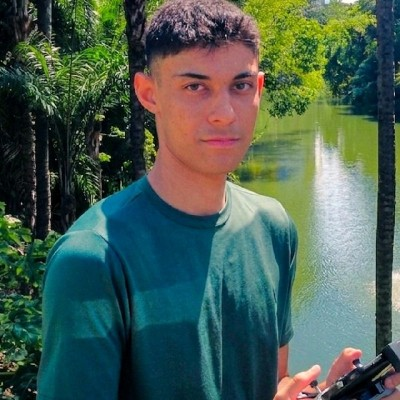

Scegli un personaggio
Ogni personaggio è un quaderno di parole ed espressioni vere, ognuna con la traduzione, la spiegazione e una frase d'esempio.
GaribaldiTotòGianni RodariMaria Montessori
Ginestra prende le parole e le espressioni che raccogli dai grandi personaggi italiani e le trasforma in lezioni brevi, a gioco. Tocchi, abbini, ascolti, scrivi: le parole restano.
Si prova subito, senza account. I progressi restano sul tuo dispositivo.
Questo esercizio è vero: scegli una risposta e premi Controlla. Le parole sono quelle di Garibaldi.
Per ora solo italiano e portoghese. È una versione di prova: le parole si traducono dall'italiano al portoghese e viceversa, e le altre lingue non sono ancora supportate.
Assomiglia molto a Duolingo, e non è un caso. Ginestra è nata ispirandosi a Duolingo: la strada a nodi, le corone, la serie, i cuori. Per questo l'aspetto è così simile.
È un progetto di volontariato per chi insegna italiano. È pensata per le istituzioni che insegnano la lingua e verrà offerta gratuitamente. Se un'istituzione la sceglie, l'aspetto cambierà e verrà personalizzato per lei.
Ascolti un documentario, leggi un'intervista, segni le parole nuove. Il quaderno si riempie, ma nessuno ti chiede mai se le ricordi davvero.
Non sai quali parole ricordi e quali no. Non sai quando ripassare. Dopo due settimane il quaderno resta chiuso.
Ogni parola torna sotto forma di esercizio. Sbagli? Lo vedi subito, con la spiegazione e una frase d'esempio. Ogni esercizio ha le sue corone: quante più ne hai, tanto più la parola è tua.
Ogni personaggio è un quaderno di parole ed espressioni vere, ognuna con la traduzione, la spiegazione e una frase d'esempio.
Pochi minuti per volta. Gli esercizi cambiano di continuo, quindi non fai mai dieci volte la stessa cosa. Una serie di risposte giuste fa partire la combo e regala XP in più.
La serie, l'obiettivo giornaliero e la lega ti tengono in carreggiata senza stressarti: se un giorno salti, non perdi quello che hai imparato.
Una parola la incontri più volte e in forme diverse: prima la riconosci, poi la ricordi, poi la usi in una frase.
Una parola e quattro possibilità. Le alternative sbagliate sono scelte apposta per confondere.
Tocca la parola e la sua traduzione. Quando la coppia è giusta, sparisce.
Una frase vera, con uno spazio da riempire: capisci come si usa la parola, non solo cosa significa.
Senti la parola, anche in versione lenta, e scrivi o scegli quello che hai capito.
Ricostruisci la parola lettera per lettera, con la tastiera dell'app.
Sono schermate vere dell'app. Cambia il tema in alto a destra e cambiano anche loro.
Sul computer, un pannello laterale ti tiene sott'occhio statistiche, lega e progresso.
Quello che ti fa tornare è la voglia di non rompere la serie, di prendere un'altra corona, di salire di lega. Il resto lo fa la memoria.
Ogni giorno in cui studi accende una fiammella. Più giorni di fila, più la serie vale.
Decidi tu quanto: 10, 20, 30 o 50 XP al giorno. Una lezione perfetta vale di più.
Sbagliare costa un cuore, e uno si ricarica ogni 30 minuti. Se finiscono puoi allenarti gratis.
Le guadagni studiando. Le spendi per ricaricare i cuori, se hai fretta.
Da 0 a 5 per ogni esercizio: ti dicono quali parole sono già solide e quali vanno riviste.
Niente classifiche con sconosciuti. Ogni lega ha un obiettivo settimanale di XP: lo raggiungi e sali, vai sotto il 35% e scendi. Se non studi, non succede nulla.
Rispondi in fretta: ogni risposta giusta regala tempo e fa salire la combo, ogni errore ne toglie. Tre livelli, dal tempo normale al doppio della velocità.
Una pagina di quaderno a righe, nessun cuore, nessun indizio. Rispondi, consegni e solo allora vedi la correzione.
Il voto è in trentesimi: 18 per passare, 30 e lode se non sbagli niente. Ti ricordi il tuo record per ogni personaggio, così sai se stai migliorando.
Il vocabolario arriva dalle voci e dalle storie di diciotto personaggi italiani. Impari le parole nel mondo in cui sono state usate.

Data Scientist & Data Analyst • AI Engineer, lavoro nel gruppo Stefanini.
Amo la lingua e la cultura italiana, e apprezzo la Divina Commedia. Ginestra è nata perché a me è stata utile per studiare, e ho deciso di condividerla con tutti, gratuitamente, come volontariato.
Scrivimi su LinkedInNo. Apri l'app e inizi. I tuoi progressi (XP, serie, corone) restano salvati sul tuo dispositivo.
Per chi parla portoghese e impara l'italiano: le traduzioni e le frasi d'esempio sono in portoghese.
Sì, è pensata per il telefono. Sul computer trovi anche un pannello laterale con statistiche, lega e progresso.
La serie riparte da capo, ma le corone e le parole che hai imparato restano. Nella lega, se non studi, non cambia nulla.
No, è una versione di prova e continua a crescere. Se la usi, il tuo parere conta.

Apri Ginestra, scegli un personaggio e fai il primo passo sulla strada.
Apri Ginestra